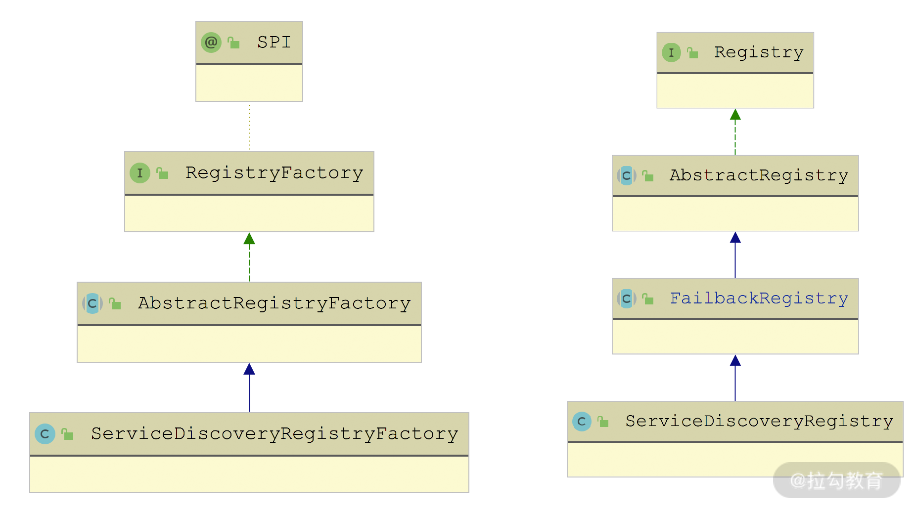
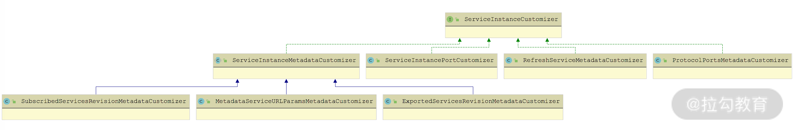
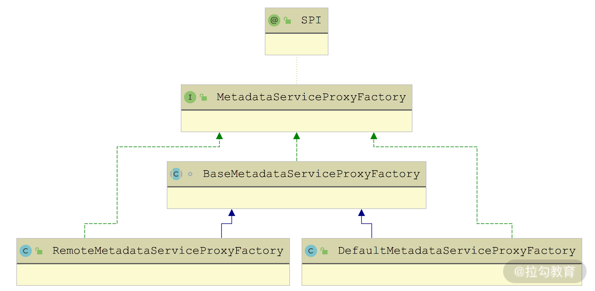
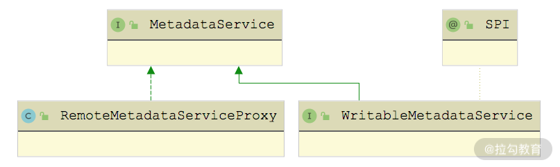

- 00 开篇词 深入掌握 Dubbo 原理与实现，提升你的职场竞争力.md.html
- 01 Dubbo 源码环境搭建：千里之行，始于足下.md.html
- 02 Dubbo 的配置总线：抓住 URL，就理解了半个 Dubbo.md.html
- 03 Dubbo SPI 精析，接口实现两极反转（上）.md.html
- 04 Dubbo SPI 精析，接口实现两极反转（下）.md.html
- 05 海量定时任务，一个时间轮搞定.md.html
- 06 ZooKeeper 与 Curator，求你别用 ZkClient 了（上）.md.html
- 07 ZooKeeper 与 Curator，求你别用 ZkClient 了（下）.md.html
- 08 代理模式与常见实现.md.html
- 09 Netty 入门，用它做网络编程都说好（上）.md.html
- 10 Netty 入门，用它做网络编程都说好（下）.md.html
- 11 简易版 RPC 框架实现（上）.md.html
- 12 简易版 RPC 框架实现（下）.md.html
- 13 本地缓存：降低 ZooKeeper 压力的一个常用手段.md.html
- 14 重试机制是网络操作的基本保证.md.html
- 15 ZooKeeper 注册中心实现，官方推荐注册中心实践.md.html
- 16 Dubbo Serialize 层：多种序列化算法，总有一款适合你.md.html
- 17 Dubbo Remoting 层核心接口分析：这居然是一套兼容所有 NIO 框架的设计？.md.html
- 18 Buffer 缓冲区：我们不生产数据，我们只是数据的搬运工.md.html
- 19 Transporter 层核心实现：编解码与线程模型一文打尽（上）.md.html
- 20 Transporter 层核心实现：编解码与线程模型一文打尽（下）.md.html
- 21 Exchange 层剖析：彻底搞懂 Request-Response 模型（上）.md.html
- 22 Exchange 层剖析：彻底搞懂 Request-Response 模型（下）.md.html
- 23 核心接口介绍，RPC 层骨架梳理.md.html
- 24 从 Protocol 起手，看服务暴露和服务引用的全流程（上）.md.html
- 25 从 Protocol 起手，看服务暴露和服务引用的全流程（下）.md.html
- 26 加餐：直击 Dubbo “心脏”，带你一起探秘 Invoker（上）.md.html
- 27 加餐：直击 Dubbo “心脏”，带你一起探秘 Invoker（下）.md.html
- 28 复杂问题简单化，代理帮你隐藏了多少底层细节？.md.html
- 29 加餐：HTTP 协议 + JSON-RPC，Dubbo 跨语言就是如此简单.md.html
- 30 Filter 接口，扩展 Dubbo 框架的常用手段指北.md.html
- 31 加餐：深潜 Directory 实现，探秘服务目录玄机.md.html
- 32 路由机制：请求到底怎么走，它说了算（上）.md.html
- 33 路由机制：请求到底怎么走，它说了算（下）.md.html
- 34 加餐：初探 Dubbo 动态配置的那些事儿.md.html
- 35 负载均衡：公平公正物尽其用的负载均衡策略，这里都有（上）.md.html
- 36 负载均衡：公平公正物尽其用的负载均衡策略，这里都有（下）.md.html
- 37 集群容错：一个好汉三个帮（上）.md.html
- 38 集群容错：一个好汉三个帮（下）.md.html
- 39 加餐：多个返回值不用怕，Merger 合并器来帮忙.md.html
- 40 加餐：模拟远程调用，Mock 机制帮你搞定.md.html
- 41 加餐：一键通关服务发布全流程.md.html
- 42 加餐：服务引用流程全解析.md.html
- 43 服务自省设计方案：新版本新方案.md.html
- 44 元数据方案深度剖析，如何避免注册中心数据量膨胀？.md.html
- 45 加餐：深入服务自省方案中的服务发布订阅（上）.md.html
- 46 加餐：深入服务自省方案中的服务发布订阅（下）.md.html
- 47 配置中心设计与实现：集中化配置 and 本地化配置，我都要（上）.md.html
- 48 配置中心设计与实现：集中化配置 and 本地化配置，我都要（下）.md.html
- 49 结束语 认真学习，缩小差距.md.html
46 加餐：深入服务自省方案中的服务发布订阅（下）
在课程第二部分（13~15 课时）中介绍 Dubbo 传统框架中的注册中心部分实现时，我们提到了 Registry、RegistryFactory 等与注册中心交互的接口。为了将 ServiceDiscovery 接口的功能与 Registry 融合，Dubbo 提供了一个 ServiceDiscoveryRegistry 实现，继承关系如下所示：

ServiceDiscoveryRegistry 、ServiceDiscoveryRegistryFactory 继承关系图
由图我们可以看到：ServiceDiscoveryRegistryFactory（扩展名称是 service-discovery-registry）是 ServiceDiscoveryRegistry 对应的工厂类，继承了 AbstractRegistryFactory 提供的公共能力。
ServiceDiscoveryRegistry 是一个面向服务实例（ServiceInstance）的注册中心实现，其底层依赖前面两个课时介绍的 ServiceDiscovery、WritableMetadataService 等组件。
ServiceDiscoveryRegistry 中的核心字段有如下几个。
- serviceDiscovery（ServiceDiscovery 类型）：用于 ServiceInstance 的发布和订阅。
- subscribedServices（Set 类型）：记录了当前订阅的服务名称。
- serviceNameMapping（ServiceNameMapping 类型）：用于 Service ID 与 Service Name 之间的转换。
- writableMetadataService（WritableMetadataService 类型）：用于发布和查询元数据。
- registeredListeners（Set 类型）：记录了注册的 ServiceInstancesChangedListener 的唯一标识。
- subscribedURLsSynthesizers（List 类型）：将 ServiceInstance 的信息与元数据进行合并，得到订阅服务的完整 URL。
在 ServiceDiscoveryRegistry 的构造方法中，会初始化上述字段：
public ServiceDiscoveryRegistry(URL registryURL) {
// 初始化父类，其中包括FailbackRegistry中的时间轮和重试定时任务以及AbstractRegistry中的本地文件缓存等
super(registryURL);
// 初始化ServiceDiscovery对象
this.serviceDiscovery = createServiceDiscovery(registryURL);
// 从registryURL中解析出subscribed-services参数，并按照逗号切分，得到subscribedServices集合
this.subscribedServices = parseServices(registryURL.getParameter(SUBSCRIBED_SERVICE_NAMES_KEY));
// 获取DefaultServiceNameMapping对象
this.serviceNameMapping = ServiceNameMapping.getDefaultExtension();
// 初始化WritableMetadataService对象
String metadataStorageType = getMetadataStorageType(registryURL);
this.writableMetadataService = WritableMetadataService.getExtension(metadataStorageType);
// 获取目前支持的全部SubscribedURLsSynthesizer实现，并初始化
this.subscribedURLsSynthesizers = initSubscribedURLsSynthesizers();
}
在 createServiceDiscovery() 方法中，不仅会加载 ServiceDiscovery 的相应实现，还会在外层添加 EventPublishingServiceDiscovery 装饰器，在 register()、initialize() 等方法前后触发相应的事件，具体实现如下：
protected ServiceDiscovery createServiceDiscovery(URL registryURL) {
// 根据registryURL获取对应的ServiceDiscovery实现
ServiceDiscovery originalServiceDiscovery = getServiceDiscovery(registryURL);
// ServiceDiscovery外层添加一层EventPublishingServiceDiscovery修饰器，
// EventPublishingServiceDiscovery会在register()、initialize()等方法前后触发相应的事件，
// 例如，在register()方法的前后分别会触发ServiceInstancePreRegisteredEvent和ServiceInstanceRegisteredEvent
ServiceDiscovery serviceDiscovery = enhanceEventPublishing(originalServiceDiscovery);
execute(() -> { // 初始化ServiceDiscovery
serviceDiscovery.initialize(registryURL.addParameter(INTERFACE_KEY, ServiceDiscovery.class.getName())
.removeParameter(REGISTRY_TYPE_KEY));
});
return serviceDiscovery;
}
Registry 接口的核心是服务发布和订阅，ServiceDiscoveryRegistry 既然实现了 Registry 接口，必然也要实现了服务注册和发布的功能。
服务注册
在 ServiceDiscoveryRegistry 的 register() 中，首先会检测待发布 URL 中的 side 参数，然后调用父类的 register() 方法。我们知道 FailbackRegistry.register() 方法会回调子类的 doRegister() 方法，而 ServiceDiscoveryRegistry.doRegister() 方法直接依赖 WritableMetadataService 的 exportURL() 方法，完成元数据的发布。
public final void register(URL url) {
if (!shouldRegister(url)) { // 检测URL中的side参数是否为provider
return;
}
super.register(url);
}
@Override
public void doRegister(URL url) {
// 将元数据发布到MetadataService
if (writableMetadataService.exportURL(url)) {
... // 输出INFO日志
} else {
... // 输出WARN日志
}
}
ServiceDiscoveryRegistry.unregister() 方法的实现逻辑也是类似的，这里就不再展示，你若感兴趣的话可以参考源码进行学习。
服务订阅
接下来看 ServiceDiscoveryRegistry.subscribe() 方法的实现，其中也是首先会检测待发布 URL 中的 side 参数，然后调用父类的 subscribe() 方法。我们知道 FailbackRegistry.subscribe() 方法会回调子类的 doSubscribe() 方法。在 ServiceDiscoveryRegistry 的 doSubscribe() 方法中，会执行如下完整的订阅流程：
- 调用 WriteMetadataService.subscribeURL() 方法在 subscribedServiceURLs 集合中记录当前订阅的 URL；
- 通过订阅的 URL 获取 Service Name；
- 根据 Service Name 获取 ServiceInstance 集合；
- 根据 ServiceInstance 调用相应的 MetadataService 服务，获取元数据，其中涉及历史数据的清理和缓存更新等操作；
- 将 ServiceInstance 信息以及对应的元数据信息进行合并，得到完整的 URL；
- 触发 NotifyListener 监听器；
- 添加 ServiceInstancesChangedListener 监听器。
下面来看 ServiceDiscoveryRegistry.doSubscribe() 方法的具体实现：
protected void subscribeURLs(URL url, NotifyListener listener) {
// 记录该订阅的URL
writableMetadataService.subscribeURL(url);
// 获取订阅的Service Name
Set<String> serviceNames = getServices(url);
if (CollectionUtils.isEmpty(serviceNames)) {
throw new IllegalStateException("...");
}
// 执行后续的订阅操作
serviceNames.forEach(serviceName -> subscribeURLs(url, listener, serviceName));
}
我们这就展开一步步来解析上面的这个流程。
1. 获取 Service Name
首先来看 getServices() 方法的具体实现：它会首先根据 subscribeURL 的 provided-by 参数值获取订阅的 Service Name 集合，如果获取失败，则根据 Service ID 获取对应的 Service Name 集合；如果此时依旧获取失败，则尝试从 registryURL 中的 subscribed-services 参数值获取 Service Name 集合。下面来看 getServices() 方法的具体实现：
protected Set<String> getServices(URL subscribedURL) {
Set<String> subscribedServices = new LinkedHashSet<>();
// 首先尝试从subscribeURL中获取provided-by参数值，其中封装了全部Service Name
String serviceNames = subscribedURL.getParameter(PROVIDED_BY);
if (StringUtils.isNotEmpty(serviceNames)) {
// 解析provided-by参数值，得到全部的Service Name集合
subscribedServices = parseServices(serviceNames);
}
if (isEmpty(subscribedServices)) {
// 如果没有指定provided-by参数，则尝试通过subscribedURL构造Service ID，
// 然后通过ServiceNameMapping的get()方法查找Service Name
subscribedServices = findMappedServices(subscribedURL);
if (isEmpty(subscribedServices)) {
// 如果subscribedServices依旧为空，则返回registryURL中的subscribed-services参数值
subscribedServices = getSubscribedServices();
}
}
return subscribedServices;
}
2. 查找 Service Instance
接下来看 subscribeURLs(url, listener, serviceName) 这个重载的具体实现，其中会根据 Service Name 从 ServiceDiscovery 中查找对应的 ServiceInstance 集合，以及注册ServiceInstancesChangedListener 监听。
protected void subscribeURLs(URL url, NotifyListener listener, String serviceName) {
// 根据Service Name获取ServiceInstance对象
List<ServiceInstance> serviceInstances = serviceDiscovery.getInstances(serviceName);
// 调用另一个subscribeURLs()方法重载
subscribeURLs(url, listener, serviceName, serviceInstances);
// 添加ServiceInstancesChangedListener监听器
registerServiceInstancesChangedListener(url, new ServiceInstancesChangedListener(serviceName) {
@Override
public void onEvent(ServiceInstancesChangedEvent event) {
subscribeURLs(url, listener, event.getServiceName(), new ArrayList<>(event.getServiceInstances()));
}
});
}
在 subscribeURLs(url, listener, serviceName, serviceInstances) 这个重载中，主要是根据前面获取的 ServiceInstance 实例集合，构造对应的、完整的 subscribedURL 集合，并触发传入的 NotifyListener 监听器，如下所示：
protected void subscribeURLs(URL subscribedURL, NotifyListener listener, String serviceName,
Collection<ServiceInstance> serviceInstances) {
List<URL> subscribedURLs = new LinkedList<>();
// 尝试通过MetadataService获取subscribedURL集合
subscribedURLs.addAll(getExportedURLs(subscribedURL, serviceInstances));
if (subscribedURLs.isEmpty()) { // 如果上面的尝试失败
// 尝试通过SubscribedURLsSynthesizer获取subscribedURL集合
subscribedURLs.addAll(synthesizeSubscribedURLs(subscribedURL, serviceInstances));
}
// 触发NotifyListener监听器
listener.notify(subscribedURLs);
}
这里构造完整 subscribedURL 可以分为两个分支。
-
第一个分支：结合传入的 subscribedURL 以及从元数据中获取每个 ServiceInstance 的对应参数，组装成每个 ServiceInstance 对应的完整 subscribeURL。该部分实现在 getExportedURLs() 方法中，也是订阅操作的核心。
-
第二个分支：当上述操作无法获得完整的 subscribeURL 集合时，会使用 SubscribedURLsSynthesizer，基于 subscribedURL 拼凑出每个 ServiceInstance 对应的完整的 subscribedURL。该部分实现在 synthesizeSubscribedURLs() 方法中，目前主要针对 rest 协议。
3. getExportedURLs() 方法核心实现
getExportedURLs() 方法主要围绕 serviceRevisionExportedURLsCache 这个集合展开的，它是一个 Map<String, Map<String, List>> 类型的集合，其中第一层 Key 是 Service Name，第二层 Key 是 Revision，最终的 Value 值是 Service Name 对应的最新的 URL 集合。
（1）清理过期 URL
在 getExportedURLs() 方法中，首先会调用 expungeStaleRevisionExportedURLs() 方法销毁全部已过期的 URL 信息，具体实现如下：
private void expungeStaleRevisionExportedURLs(List<ServiceInstance> serviceInstances) {
// 从第一个ServiceInstance即可获取Service Name
String serviceName = serviceInstances.get(0).getServiceName();
// 获取该Service Name当前在serviceRevisionExportedURLsCache中对应的URL集合
Map<String, List<URL>> revisionExportedURLsMap = serviceRevisionExportedURLsCache
.computeIfAbsent(serviceName, s -> new LinkedHashMap());
if (revisionExportedURLsMap.isEmpty()) { // 没有缓存任何URL，则无须后续清理操作，直接返回即可
return;
}
// 获取Service Name在serviceRevisionExportedURLsCache中缓存的修订版本
Set<String> existedRevisions = revisionExportedURLsMap.keySet();
// 从ServiceInstance中获取当前最新的修订版本
Set<String> currentRevisions = serviceInstances.stream()
.map(ServiceInstanceMetadataUtils::getExportedServicesRevision)
.collect(Collectors.toSet());
// 获取要删除的陈旧修订版本：staleRevisions = existedRevisions(copy) - currentRevisions
Set<String> staleRevisions = new HashSet<>(existedRevisions);
staleRevisions.removeAll(currentRevisions);
// 从revisionExportedURLsMap中删除staleRevisions集合中所有Key对应的URL集合
staleRevisions.forEach(revisionExportedURLsMap::remove);
}
我们看到这里是通过 ServiceInstanceMetadataUtils 工具类从每个 ServiceInstance 的 metadata 集合中获取最新的修订版本（Key 为 dubbo.exported-services.revision），那么该修订版本的信息是在哪里写入的呢？我们来看一个新接口—— ServiceInstanceCustomizer，具体定义如下：
@SPI
public interface ServiceInstanceCustomizer extends Prioritized {
void customize(ServiceInstance serviceInstance);
}
关于 ServiceInstanceCustomizer 接口，这里需要关注三个点：①该接口被 @SPI 注解修饰，是一个扩展点；②该接口继承了 Prioritized 接口；③该接口中定义的 customize() 方法可以用来自定义 ServiceInstance 信息，其中就包括控制 metadata 集合中的数据。
也就说，ServiceInstanceCustomizer 的多个实现可以按序调用，实现 ServiceInstance 的自定义。下图展示了 ServiceInstanceCustomizer 接口的所有实现类：

ServiceInstanceCustomizer 继承关系图
我们首先来看 ServiceInstanceMetadataCustomizer 这个抽象类，它主要是对 ServiceInstance 中 metadata 这个 KV 集合进行自定义修改，这部分逻辑在 customize() 方法中，如下所示：
public final void customize(ServiceInstance serviceInstance) {
// 获取ServiceInstance对象的metadata字段
Map<String, String> metadata = serviceInstance.getMetadata();
// 生成要添加到metadata集合的KV值
String propertyName = resolveMetadataPropertyName(serviceInstance);
String propertyValue = resolveMetadataPropertyValue(serviceInstance);
// 判断待添加的KV值是否为空
if (!isBlank(propertyName) && !isBlank(propertyValue)) {
String existedValue = metadata.get(propertyName);
boolean put = existedValue == null || isOverride();
if (put) { // 是否覆盖原值
metadata.put(propertyName, propertyValue);
}
}
}
生成 KV 值的 resolveMetadataPropertyName()、resolveMetadataPropertyValue() 方法以及 isOverride() 方法都是抽象方法，在 ServiceInstanceMetadataCustomizer 子类中实现。
在 ExportedServicesRevisionMetadataCustomizer 这个实现中，resolveMetadataPropertyName() 方法返回 "dubbo.exported-services.revision" 固定字符串，resolveMetadataPropertyValue() 方法会通过 WritableMetadataService 获取当前 ServiceInstance 对象发布的全部 URL，然后计算 revision 值。具体实现如下：
protected String resolveMetadataPropertyValue(ServiceInstance serviceInstance) {
// 从ServiceInstance对象的metadata集合中获取当前ServiceInstance存储元数据的方式（local还是remote）
String metadataStorageType = getMetadataStorageType(serviceInstance);
// 获取相应的WritableMetadataService对象，并获取当前ServiceInstance发布的全部元数据
WritableMetadataService writableMetadataService = getExtension(metadataStorageType);
SortedSet<String> exportedURLs = writableMetadataService.getExportedURLs();
// 计算整个exportedURLs集合的revision值
URLRevisionResolver resolver = new URLRevisionResolver();
return resolver.resolve(exportedURLs);
}
这里需要说明下计算 revision 值的核心实现：首先获取每个服务接口的方法签名以及对应 URL 参数集合，然后计算 hashCode 并加和返回，如果通过上述方式没有拿到 revision 值，则返回 "N/A" 占位符字符串。URLRevisionResolver.resolve() 方法的具体实现比较简单，这里就不再展示，你若感兴趣的话可以参考源码进行学习。
在 SubscribedServicesRevisionMetadataCustomizer 这个实现中，resolveMetadataPropertyName() 方法返回的是 "dubbo.subscribed-services.revision" 固定字符串，resolveMetadataPropertyValue() 方法会通过 WritableMetadataService 获取当前 ServiceInstance 对象引用的全部 URL，然后计算 revision 值并返回。具体实现如下：
protected String resolveMetadataPropertyValue(ServiceInstance serviceInstance) {
String metadataStorageType = getMetadataStorageType(serviceInstance);
WritableMetadataService writableMetadataService = getExtension(metadataStorageType);
// 获取subscribedServiceURLs集合
SortedSet<String> subscribedURLs = writableMetadataService.getSubscribedURLs();
URLRevisionResolver resolver = new URLRevisionResolver();
// 计算revision值
return resolver.resolve(subscribedURLs);
}
在 MetadataServiceURLParamsMetadataCustomizer 这个实现中，resolveMetadataPropertyName() 方法返回 "dubbo.metadata-service.url-params" 固定字符串，resolveMetadataPropertyValue() 方法返回 MetadataService 服务 URL 的参数。
对于 RefreshServiceMetadataCustomizer 这个实现，我们首先关注其执行顺序， 它覆盖了 getPriority() 方法，具体实现如下：
public int getPriority() {
return MIN_PRIORITY; // 执行优先级最低
}
这就保证了 RefreshServiceMetadataCustomizer 在前面介绍的 ServiceInstanceMetadataCustomizer 实现之后执行（ServiceInstanceMetadataCustomizer 的优先级为 NORMAL_PRIORITY）。
customize() 方法的实现中，RefreshServiceMetadataCustomizer 会分别获取该 ServiceInstance 发布服务的 URL revision 以及引用服务的 URL revision，并更新到元数据中心。具体实现如下：
public void customize(ServiceInstance serviceInstance) {
String metadataStoredType = getMetadataStorageType(serviceInstance);
WritableMetadataService writableMetadataService = getExtension(metadataStoredType);
// 从ServiceInstance.metadata集合中获取两个revision，并调用refreshMetadata()方法进行更新
writableMetadataService.refreshMetadata(getExportedServicesRevision(serviceInstance),
getSubscribedServicesRevision(serviceInstance));
}
在 WritableMetadataService 接口的实现中，只有 RemoteWritableMetadataService 实现了 refreshMetadata() 方法，其中会判断两个 revision 值是否发生变化，如果发生了变化，则将相应的 URL 集合更新到元数据中心。如下所示：
public boolean refreshMetadata(String exportedRevision, String subscribedRevision) {
boolean result = true;
// 比较当前ServiceInstance的exportedRevision是否发生变化
if (!StringUtils.isEmpty(exportedRevision) && !exportedRevision.equals(this.exportedRevision)) {
// 发生变化的话，会更新exportedRevision字段，同时将exportedServiceURLs集合中的URL更新到元数据中心
this.exportedRevision = exportedRevision;
boolean executeResult = saveServiceMetadata();
if (!executeResult) {
result = false;
}
}
// 比较当前ServiceInstance的subscribedRevision是否发生变化
if (!StringUtils.isEmpty(subscribedRevision) && !subscribedRevision.equals(this.subscribedRevision)
&& CollectionUtils.isNotEmpty(writableMetadataService.getSubscribedURLs())) {
// 发生变化的话，会更新subscribedRevision字段，同时将subscribedServiceURLs集合中的URL更新到元数据中心
this.subscribedRevision = subscribedRevision;
SubscriberMetadataIdentifier metadataIdentifier = new SubscriberMetadataIdentifier();
metadataIdentifier.setApplication(serviceName());
metadataIdentifier.setRevision(subscribedRevision);
boolean executeResult = throwableAction(getMetadataReport()::saveSubscribedData, metadataIdentifier,
writableMetadataService.getSubscribedURLs());
if (!executeResult) {
result = false;
}
}
return result;
}
在 EventListener 接口的实现中有一个名为 CustomizableServiceInstanceListener 的实现，它会监听 ServiceInstancePreRegisteredEvent，在其 onEvent() 方法中，加载全部 ServiceInstanceCustomizer 实现，并调用全部 customize() 方法完成 ServiceInstance 的自定义。具体实现如下：
public void onEvent(ServiceInstancePreRegisteredEvent event) {
// 加载全部ServiceInstanceCustomizer实现
ExtensionLoader<ServiceInstanceCustomizer> loader =
ExtensionLoader.getExtensionLoader(ServiceInstanceCustomizer.class);
// 按序实现ServiceInstance自定义
loader.getSupportedExtensionInstances().forEach(customizer -> {
customizer.customize(event.getServiceInstance());
});
}
（2）更新 Revision 缓存
介绍完 ServiceInstanceMetadataCustomizer 的内容之后，下面我们回到 ServiceDiscoveryRegistry 继续分析。
在清理完过期的修订版本 URL 之后，接下来会检测所有 ServiceInstance 的 revision 值是否已经存在于 serviceRevisionExportedURLsCache 缓存中，如果某个 ServiceInstance 的 revision 值没有在该缓存中，则会调用该 ServiceInstance 发布的 MetadataService 接口进行查询，这部分逻辑在 initializeRevisionExportedURLs() 方法中实现。具体实现如下：
private List<URL> initializeRevisionExportedURLs(ServiceInstance serviceInstance) {
if (serviceInstance == null) { // 判空
return emptyList();
}
// 获取Service Name
String serviceName = serviceInstance.getServiceName();
// 获取该ServiceInstance.metadata中携带的revision值
String revision = getExportedServicesRevision(serviceInstance);
// 从serviceRevisionExportedURLsCache集合中获取该revision值对应的URL集合
Map<String, List<URL>> revisionExportedURLsMap = getRevisionExportedURLsMap(serviceName);
List<URL> revisionExportedURLs = revisionExportedURLsMap.get(revision);
if (revisionExportedURLs == null) { // serviceRevisionExportedURLsCache缓存没有命中
// 调用该ServiceInstance对应的MetadataService服务，获取其发布的URL集合
revisionExportedURLs = getExportedURLs(serviceInstance);
if (revisionExportedURLs != null) { // 调用MetadataService服务成功之后，更新到serviceRevisionExportedURLsCache缓存中
revisionExportedURLsMap.put(revision, revisionExportedURLs);
}
} else { // 命中serviceRevisionExportedURLsCache缓存
... // 打印日志
}
return revisionExportedURLs;
}
（3）请求 MetadataService 服务
这里我们可以看到，请求某个 ServiceInstance 的 MetadataService 接口的实现是在 getExportedURLs() 方法中实现的，与我们前面整个课程介绍的请求普通业务接口的原理类似。具体实现如下：
private List<URL> getExportedURLs(ServiceInstance providerServiceInstance) {
List<URL> exportedURLs = null;
// 获取指定ServiceInstance实例存储元数据的类型
String metadataStorageType = getMetadataStorageType(providerServiceInstance);
try {
// 创建MetadataService接口的本地代理
MetadataService metadataService = MetadataServiceProxyFactory.getExtension(metadataStorageType)
.getProxy(providerServiceInstance);
if (metadataService != null) {
// 通过本地代理，请求该ServiceInstance的MetadataService服务
SortedSet<String> urls = metadataService.getExportedURLs();
exportedURLs = toURLs(urls);
}
} catch (Throwable e) {
exportedURLs = null; // 置空exportedURLs
}
return exportedURLs;
}
这里涉及一个新的接口——MetadataServiceProxyFactory，它是用来创建 MetadataService 本地代理的工厂类，继承关系如下所示：

MetadataServiceProxyFactory 继承关系图
在 BaseMetadataServiceProxyFactory 中提供了缓存 MetadataService 本地代理的公共功能，其中维护了一个 proxies 集合（HashMap<String, MetadataService> 类型），Key 是 Service Name 与一个 ServiceInstance 的 revision 值的组合，Value 是该 ServiceInstance 对应的 MetadataService 服务的本地代理对象。创建 MetadataService 本地代理的功能是在 createProxy() 抽象方法中实现的，这个方法由 BaseMetadataServiceProxyFactory 的子类具体实现。
下面来看 BaseMetadataServiceProxyFactory 的两个实现——DefaultMetadataServiceProxyFactory 和 RemoteMetadataServiceProxyFactory。
DefaultMetadataServiceProxyFactory 在其 createProxy() 方法中，会先通过 MetadataServiceURLBuilder 获取 MetadataService 接口的 URL，然后通过 Protocol 接口引用指定 ServiceInstance 发布的 MetadataService 服务，得到对应的 Invoker 对象，最后通过 ProxyFactory 在 Invoker 对象的基础上创建 MetadataService 本地代理。
protected MetadataService createProxy(ServiceInstance serviceInstance) {
MetadataServiceURLBuilder builder = null;
ExtensionLoader<MetadataServiceURLBuilder> loader
= ExtensionLoader.getExtensionLoader(MetadataServiceURLBuilder.class);
Map<String, String> metadata = serviceInstance.getMetadata();
// 在使用Spring Cloud的时候，metadata集合中会包含METADATA_SERVICE_URLS_PROPERTY_NAME整个Key
String dubboURLsJSON = metadata.get(METADATA_SERVICE_URLS_PROPERTY_NAME);
if (StringUtils.isNotEmpty(dubboURLsJSON)) {
builder = loader.getExtension(SpringCloudMetadataServiceURLBuilder.NAME);
} else {
builder = loader.getExtension(StandardMetadataServiceURLBuilder.NAME);
}
// 构造MetadataService服务对应的URL集合
List<URL> urls = builder.build(serviceInstance);
// 引用服务，创建Invoker，注意，即使MetadataService接口使用了多种协议，这里也只会使用第一种协议
Invoker<MetadataService> invoker = protocol.refer(MetadataService.class, urls.get(0));
// 创建MetadataService的本地代理对象
return proxyFactory.getProxy(invoker);
}
这里我们来看 MetadataServiceURLBuilder 接口中创建 MetadataService 服务对应的 URL 的逻辑，下图展示了 MetadataServiceURLBuilder 接口的实现：

MetadataServiceURLBuilder 继承关系图
其中，SpringCloudMetadataServiceURLBuilder 是兼容 Spring Cloud 的实现，这里就不深入分析了。我们重点来看 StandardMetadataServiceURLBuilder 的实现，其中会根据 ServiceInstance.metadata 携带的 URL 参数、Service Name、ServiceInstance 的 host 等信息构造 MetadataService 服务对应 URL，如下所示：
public List<URL> build(ServiceInstance serviceInstance) {
// 从metadata集合中获取"dubbo.metadata-service.url-params"这个Key对应的Value值，
// 这个Key是在MetadataServiceURLParamsMetadataCustomizer中写入的
Map<String, Map<String, String>> paramsMap = getMetadataServiceURLsParams(serviceInstance);
List<URL> urls = new ArrayList<>(paramsMap.size());
// 获取Service Name
String serviceName = serviceInstance.getServiceName();
// 获取ServiceInstance监听的host
String host = serviceInstance.getHost();
// MetadataService接口可能被发布成多种协议，遍历paramsMap集合，为每种协议都生成对应的URL
for (Map.Entry<String, Map<String, String>> entry : paramsMap.entrySet()) {
String protocol = entry.getKey();
Map<String, String> params = entry.getValue();
int port = Integer.parseInt(params.get(PORT_KEY));
URLBuilder urlBuilder = new URLBuilder()
.setHost(host)
.setPort(port)
.setProtocol(protocol)
.setPath(MetadataService.class.getName());
params.forEach((name, value) -> urlBuilder.addParameter(name, valueOf(value)));
urlBuilder.addParameter(GROUP_KEY, serviceName);
urls.add(urlBuilder.build());
}
return urls;
}
接下来我们看 RemoteMetadataServiceProxyFactory 这个实现类，其中的 createProxy() 方法会直接创建一个 RemoteMetadataServiceProxy 对象并返回。在前面第 44 课时介绍 MetadataService 接口的时候，我们重点介绍的是 WritableMetadataService 这个子接口下的实现，并没有提及 RemoteMetadataServiceProxy 这个实现。下图是 RemoteMetadataServiceProxy 在继承体系中的位置：

RemoteMetadataServiceProxy 继承关系图
RemoteMetadataServiceProxy 作为 RemoteWritableMetadataService 的本地代理，其 getExportedURLs()、getServiceDefinition() 等方法的实现，完全依赖于 MetadataReport 进行实现。这里以 getExportedURLs() 方法为例：
public SortedSet<String> getExportedURLs(String serviceInterface, String group, String version, String protocol) {
// 通过getMetadataReport()方法获取MetadataReport实现对象，并通过其getExportedURLs()方法进行查询，查询条件封装成ServiceMetadataIdentifier传入，其中包括服务接口、group、version以及revision等一系列信息，以ZookeeperMetadataReport实现为例真正有用的信息是revision和protocol
return toSortedStrings(getMetadataReport().getExportedURLs(
new ServiceMetadataIdentifier(serviceInterface, group, version, PROVIDER_SIDE, revision, protocol)));
}
到此为止，serviceRevisionExportedURLsCache 缓存中各个修订版本的 URL 已经更新到最新数据。
（4）生成 SubcribedURL
在拿到最新修订版本的 URL 集合之后，接下来会调用 cloneExportedURLs() 方法，结合模板 URL（也就是 subscribedURL）以及各个 ServiceInstance 发布出来的元数据，生成要订阅服务的最终 subscribedURL 集合。
private List<URL> cloneExportedURLs(URL subscribedURL, Collection<ServiceInstance> serviceInstances) {
if (isEmpty(serviceInstances)) {
return emptyList();
}
List<URL> clonedExportedURLs = new LinkedList<>();
serviceInstances.forEach(serviceInstance -> {
// 获取该ServiceInstance的host
String host = serviceInstance.getHost();
// 获取该ServiceInstance的模板URL集合，getTemplateExportedURLs()方法会根据Service Name以及当前ServiceInstance的revision
// 从serviceRevisionExportedURLsCache缓存中获取对应的URL集合，另外，还会根据subscribedURL的protocol、group、version等参数进行过滤
getTemplateExportedURLs(subscribedURL, serviceInstance)
.stream()
// 删除timestamp、pid等参数
.map(templateURL -> templateURL.removeParameter(TIMESTAMP_KEY))
.map(templateURL -> templateURL.removeParameter(PID_KEY))
.map(templateURL -> {
// 从ServiceInstance.metadata集合中获取该protocol对应的端口号
String protocol = templateURL.getProtocol();
int port = getProtocolPort(serviceInstance, protocol);
if (Objects.equals(templateURL.getHost(), host)
&& Objects.equals(templateURL.getPort(), port)) { // use templateURL if equals
return templateURL;
}
// 覆盖host、port参数
URLBuilder clonedURLBuilder = from(templateURL)
.setHost(host)
.setPort(port);
return clonedURLBuilder.build();
})
.forEach(clonedExportedURLs::add); // 记录新生成的URL
});
return clonedExportedURLs;
}
在 getProtocolPort() 方法中会从 ServiceInstance.metadata 集合中获取 endpoints 列表（Key 为 dubbo.endpoints），具体实现如下：
public static Integer getProtocolPort(ServiceInstance serviceInstance, String protocol) {
Map<String, String> metadata = serviceInstance.getMetadata();
// 从metadata集合中进行查询
String rawEndpoints = metadata.get("dubbo.endpoints");
if (StringUtils.isNotEmpty(rawEndpoints)) {
// 将JSON格式的数据进行反序列化，这里的Endpoint是ServiceDiscoveryRegistry的内部类，只有port和protocol两个字段
List<Endpoint> endpoints = JSON.parseArray(rawEndpoints, Endpoint.class);
for (Endpoint endpoint : endpoints) {
// 根据Protocol获取对应的port
if (endpoint.getProtocol().equals(protocol)) {
return endpoint.getPort();
}
}
}
return null;
}
在 ServiceInstance.metadata 集合中设置 Endpoint 集合的 ServiceInstanceCustomizer 接口的另一个实现—— ProtocolPortsMetadataCustomizer，主要是为了将不同 Protocol 监听的不同端口通知到 Consumer 端。ProtocolPortsMetadataCustomizer.customize() 方法的具体实现如下：
public void customize(ServiceInstance serviceInstance) {
// 获取WritableMetadataService
String metadataStoredType = getMetadataStorageType(serviceInstance);
WritableMetadataService writableMetadataService = getExtension(metadataStoredType);
Map<String, Integer> protocols = new HashMap<>();
// 先获取将当前ServiceInstance发布的各种Protocol对应的URL
writableMetadataService.getExportedURLs()
.stream().map(URL::valueOf)
// 过滤掉MetadataService接口
.filter(url -> !MetadataService.class.getName().equals(url.getServiceInterface()))
.forEach(url -> {
// 记录Protocol与port之间的映射关系
protocols.put(url.getProtocol(), url.getPort());
});
// 将protocols这个Map中的映射关系转换成Endpoint对象，然后再序列化成JSON字符串，并设置到该ServiceInstance的metadata集合中
setEndpoints(serviceInstance, protocols);
}
到此为止，整个 getExportedURLs() 方法的核心流程就介绍完了。
4. SubscribedURLsSynthesizer
最后，我们再来看看 synthesizeSubscribedURLs() 方法的相关实现，其中使用到 SubscribedURLsSynthesizer 这个接口，具体定义如下：
@SPI
public interface SubscribedURLsSynthesizer extends Prioritized {
// 是否支持该类型的URL
boolean supports(URL subscribedURL);
// 根据subscribedURL以及ServiceInstance的信息，合成完整subscribedURL集合
List<URL> synthesize(URL subscribedURL, Collection<ServiceInstance> serviceInstances);
}
目前 Dubbo 只提供了 rest 协议的实现—— RestProtocolSubscribedURLsSynthesizer，其中会根据 subscribedURL 中的服务接口以及 ServiceInstance 的 host、port、Service Name 等合成完整的 URL，具体实现如下：
public List<URL> synthesize(URL subscribedURL, Collection<ServiceInstance> serviceInstances) {
// 获取Protocol
String protocol = subscribedURL.getParameter(PROTOCOL_KEY);
return serviceInstances.stream().map(serviceInstance -> {
URLBuilder urlBuilder = new URLBuilder()
.setProtocol(protocol)
// 使用ServiceInstance的host、port
.setHost(serviceInstance.getHost())
.setPort(serviceInstance.getPort())
// 设置业务接口
.setPath(subscribedURL.getServiceInterface())
.addParameter(SIDE_KEY, PROVIDER)
// 设置Service Name
.addParameter(APPLICATION_KEY, serviceInstance.getServiceName())
.addParameter(REGISTER_KEY, TRUE.toString());
return urlBuilder.build();
}).collect(Collectors.toList());
}
到这里，关于整个 ServiceDiscoveryRegistry 的内容，我们就介绍完了。
总结
本课时我们重点介绍了 Dubbo 服务自省架构中服务发布、服务订阅功能与传统 Dubbo 架构中Registry 接口的兼容实现，也就是 ServiceDiscoveryRegistry 的核心实现。
首先我们讲解了 ServiceDiscoveryRegistry 对服务注册的核心实现，然后详细介绍了 ServiceDiscoveryRegistry 对服务订阅功能的实现，其中涉及 Service Instance 和 Service Name 的查询、MetadataService 服务调用等操作，最终得到 SubcribedURL。
下一课时，我们将开始介绍 Dubbo 服务自省架构中配置中心的相关内容，记得按时来听课。